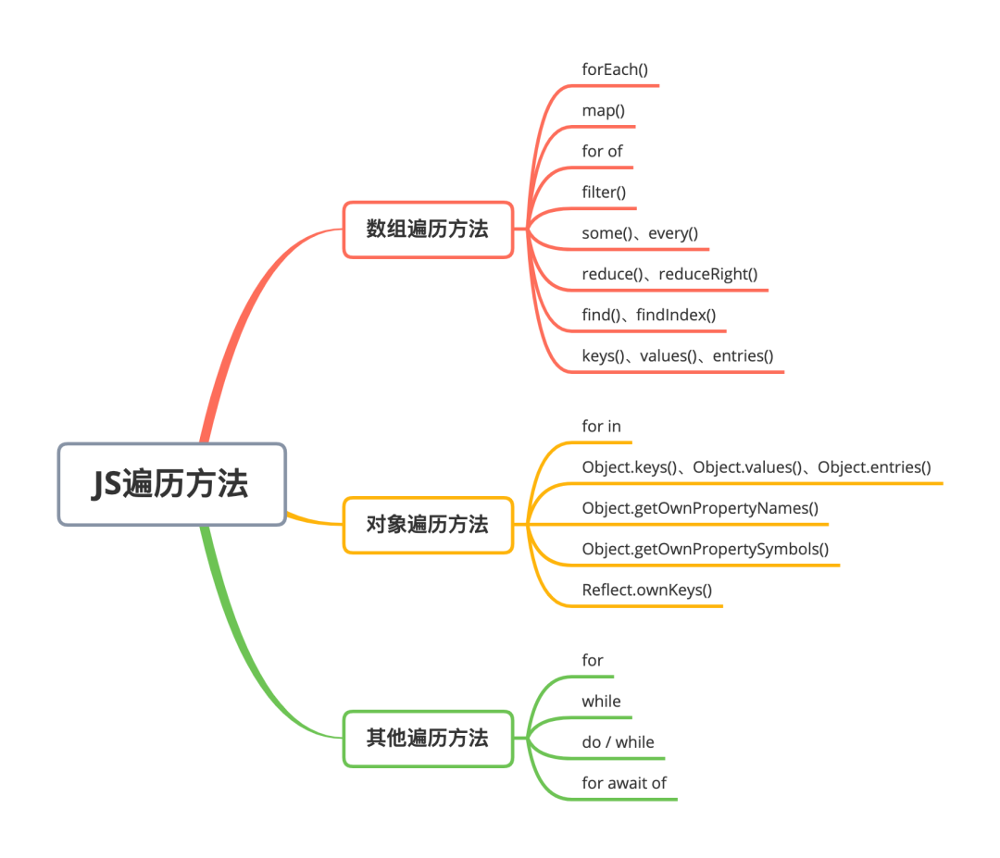
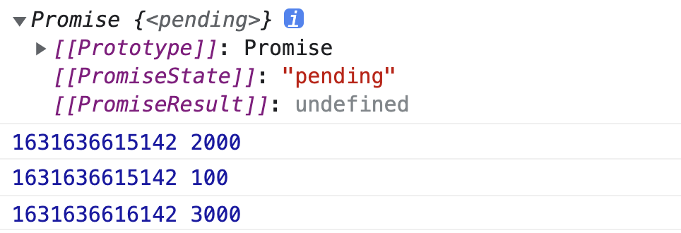

Hexo中使用Markdown嵌入图片
在 hexo 官司网中对资源文件夹的说明，将config.yml文件中的post_asset_folder选项设为 true，创建新文章时自动创建一个同名文件夹。可以通过相对路径来引用它们
使用 Markdown 嵌入图片
hexo-renderer-marked 3.1.0 引入了一个新的选项，其允许你无需使用 asset_img 标签插件就可以在 markdown 中嵌入图片
如需启用：
1 | # _config.yml |
启用后，资源图片将会被自动解析为其对应文章的路径。
例如： image.jpg 位置为 /2020/01/02/foo/image.jpg，这表示它是 /2020/01/02/foo/ 文章的一张资源图片， 将会被解析为 <img src="/2020/01/02/foo/image.jpg">。
测试结论
- 在相对路径的同名文件夹中查找文件，如有就返回，图片名称：相对路径+文件名。
- 如果方式 1 找不到文件，会在上一级的 source 目录下查找。找到会返回，图片名称：根路径+文件名。
与 vscode 差别
- hexo 相对路径是同名文件夹下，相对路径找不到会使用绝对路径。
- vscode 相对路径是所在文件位置，上一级需要使用
../；
示例：




本博客所有文章除特别声明外，均采用 CC BY-NC-SA 4.0 许可协议。转载请注明来自 创梦Blog！